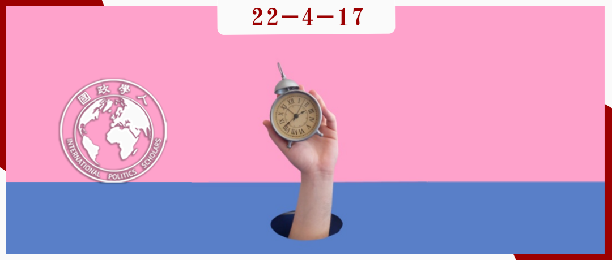

收录于合集

外交政策中的第四维度：时间
作者： Ryan K Beasley，英国圣安德鲁斯大学（St Andrews University, UK）高级讲师；Andrew R Hom，英国爱丁堡大学（University of Edinburgh, UK）高级讲师。
编译： 杨佳霖（南京大学-约翰斯·霍普金斯大学中美文化研究中心硕士）
来源： Ryan K Beasley, Andrew R Hom, Foreign Policy in the Fourth Dimension (FP4D): Locating Time in Decision-Making, Foreign Policy Analysis , Volume 17, Issue 2, April 2021, oraa028,
https://doi.org/10.1093/fpa/oraa028

导读
时间可以分为物理时间（即由钟表度量的或历法意义上的时间）和社会时间。社会科学的时间转向，在于强调时间绝不仅仅是某种外生的行动的环境，相反，只有围绕社会系统的时空延伸及构成，才能建构合理的社会思想，理解社会结构和历史变迁。
尽管如此，时间在对外政策决策研究中往往仍处于从属或次要的研究位置。因此， 本文首先介绍了时间在决策中发挥作用的五个领域：危机时刻的时间压力、时间偏见和历史类比下的决策选择、群体互动中的决策程序、个体信念的时间取向，以及决策场合的序贯分析。 对外行为决策与时间的顺序、差异、延迟以及间隔有着重要的联系，因此，根据时间的推移及相应的决策方向、速度变化，有助于确定外交决策的过程，排列行为体之间的关系。
本文在将时机/时序等客观时间划分标准与对外政策决策连接起来的同时，更强调主观时间如何通过权力机制作用于对外政策决策。 决策产生于符合变化过程的适当时点，而持有多种时间观的人们可能同时存在于一个组织中，因此时间就具有多种解说和操纵的空间。施动者可以主动地构建时间，影响身份和现状的叙事，破坏对手的决策时机、程序。
总的来说，本文强调了时间概念的引入对国际关系因果分析的重要意义，只有考虑到多种原因变量的发生顺序、原因和结果变量在时间点上的互动效应、乃至时间本身在解释过程中的构建，才能动态地理解对外政策决策行为体及其进程。
然而，在这一融合性的分析中，“时间”概念有时是直接考虑因素，有时则是某种从属变量，时间概念自身的实用性、范式独特性、可操作性仍是一个有待讨论的问题。
摘要
国际关系学术研究经历了“时间转向”，但对外政策决策研究却很少有明确的对时间的理论关注。本文认为，时间是许多研究框架的重要方面，但这些框架往往未能明晰其时间观念，未能反思时间假设和理解的隐含影响。本文提出对外政策制定的时间视角，核心特征包括时机的性质、时间动机、决策过程的时机掌握，以及作为外交政策工具的时间选择。本文通过实证案例阐明时间如何在对外政策决策中发挥作用，并试图为如何理解危机以及决策者的应对方式提供新的思路。
编译
01
引言
1884年，格林尼治国际标准时间和统一的国际日期变更线确立，并意外地赋予了几个太平洋岛国一个新的外交政策工具：时间旅行。1892年，萨摩亚移动国际日期变更线，调后了自己的时间，重复过了两次7月4日（美国独立日），以便于与加利福尼亚的贸易往来。2011年12月，鉴于国际贸易模式的转变以及与新西兰和澳大利亚的紧密联系，萨摩亚再次更改时区，让当年的12月30日完全消失。强大国际行为体通过政治谈判任意决定了一个时间制度，萨摩亚则利用这个制度作为执行其外交政策的手段。从一个简单的时钟或历法意义的时间概念来看，萨摩亚的例子似乎只是说明了如何利用一种偶发的历史地理条件。本文则更强调， 时间不只是一个客观现实，还是为外交政策定时的社会和政治活动。
时间研究反映了事件和危机的构建，这在对外政策决策研究中占据核心地位。其次，对外政策决策研究要求理解决策者对形势的定义，这也符合批判理论和时间研究对主观性的考量。最后，对外政策决策研究承认“背景”（context）的重要性，这与批判理论和时间研究对位置性、处境性和变化的强调相联系。本文认为，现有的对外政策决策模型倾向于假设决策者“处于或经历一定的时间”，而没有详细考虑时间本身的性质或意义，因此，作者提出时机理论，作为理解时间视角的一种新的动态方法。
02
对外政策决策中的时间
对外政策决策研究方法都建立在隐含的时间假设上，或者特别注意决策过程的特定时点。本文认为，这些研究倾向于将时间视为一种背景性或结构性特征，即在危机之中，当决策者面临“压力”之时，其认知偏差可能会放大，阻碍有效决策。或许，对影响外交政策的领导人个人特征的研究认识到领导人对政治时机的信念是重要的，但他们未能就时间取向的个人差异形成系统的概念。因此，时间的概念化是狭隘的，其社会建构过程没有得到探索，对外政策决策过程的动态性中的时间因素也较少体现。对此，本文主要介绍时间（time）和时间性（temporality）在决策中发挥作用的的五个领域：
2.1 时间压力与危机
在危机状况的模拟中，复刻时间维度需要许多努力，特别是最初的危机时刻的影响如何体现在一系列较长的时间单位中，以及在危机期间有可能对新的外交信息做出反应的时间变化。时间压力影响决策的一种方式是通过影响认知和群体动态，特别是增强认知错误和偏见。决策行为受到有限理性的制约，它鼓励快速、自动和高效的决策过程。决策者特别容易受到新的或令人震惊的事态发展的影响，这些事态发展会减少信息交流和灵活性，从而构成危机。此外，时间压力随着危机的拖延或扩散而增加，使得管理者以牺牲准确性为代价，并产生各种有问题的偏见。
2.2 时间偏见与决策捷径
根据“未来阴影”（shadow of the future）概念，时间视野（time horizon）在国家互动研究方法中占据核心地位。个人的时间选择可以大大偏离标准的效用贴现模型。这些方法倾向于从决策的理性主义解释开始，关注行为表现。外交政策制定者通过时间这一可识别的序列，权衡“现在或以后”的困境、进行重复博弈、或者想象“近”或“远”的事件。此外，有限的信息处理能力诱使外交决策者使用类比，通过将当前事件比作历史事件来降低其复杂性。这既能简便地总结复杂的现实情况，同时也将某些与以往决策相类似的政策选择列为优先事项。
2.3 群体动力学
小集团思维（groupthink）的核心动机是寻求一致。群体未能参与（未来的）应急计划，以及（过去的）失败对群体士气的影响，引发了人们对时间的关注。新生群体格外受到追求一致性的压力，因为缺乏成熟群体中管理冲突、确立成员相对地位、角色和决策规则的能力。新生群体中，“未来阴影”也可能是最大的阴影，因为他们预计到互动是反复的，所以避免受到先例的困扰。随着时间的推移，新群体获得了互动的经验，并可能会发展出更清晰的决策程序，更好地理解互动的动态、角色和惯例。
2.4 个体差异：信念和特质
有大量文献涉及操作码分析，以了解信念如何影响决策，包括五种哲理性（P1-P5）和五种工具性（I1-I5）信念，此外，领导者特质分析法也要研究具体的政治人格特质，如观念复杂性、任务导向和自信心。其中，显然涉及一些时间性因素，例如，哲理性信念P2（价值观最终实现的前景如何？）、P3（政治的未来可预测吗？）和P4（一个人对历史发展能有多少掌控？）都涉及到关于历史或未来的控制和预测程度的信念。工具性信念I4（什么是推进自己利益的最佳行动时机？）直接涉及到时机问题。时间取向似乎是领导人关于目标和手段的一般信念的一个决定性特征，但从事操作码研究的外交政策学者往往没有明确地将这些方面纳入他们的分析中。
2.5 时序决策和决策场合
序贯分析（sequential analysis）有助于模拟“决策场合”中“时序”的重要性，对危机的内部环节进行更细微的概念化。例如，多元启发理论观察发现，决策者在参与价值最大化过程之前首先排除不可接受的选择。
上述方法均有助于切分冗长、复杂和流动的决策过程，表现出对外政策研究学者关注事件或“微事件”的倾向。但这些 事件往往是不连续的，决策研究却总是把时间看作是一种排序的手段，用不断变化的事件、环境和其他行为者的反应来分隔外交决策的过程。 面对个人对时间的主观建构问题，他们倾向于通过危机的视角来看待，即在危机中，短暂的决策时间“迫使”决策者带着偏见参与信息处理或时间推理过程，以简化政策制定。但不同的时间取向要么没有被系统地研究，要么很少得到测量。
本文主张时间是一种社会建构，可能以各种形式出现，并因与施动者的互动而改变。时间因此成为一种资源，行为体可以主动地构建，并基于权威来分配、操纵和争夺；决策是一种有目的地缝合变化过程的模式，沿着过去和未来的轴线描绘现在。操纵时间也成为一种外交政策工具，应对对手的决策过程（例如，将他们置于“时间压力”之下），破坏他们的政策时机（例如，破坏他们对关键决策或事件的协调），甚至可能建立更广泛的时间制度，成为规范国家间关系的制度化做法（例如，日历时间或格林尼治时间）。
03
定时理论
定时不仅关注于某一特定事件发生的时间，还关注于人类通过采用一种总体原则或思想——时间标准（timing standard）来综合变化的环境、过程和参与者的努力，为的是形成一个可辨识的和有意义的“事件链”或其他一些过程性的序列。它确立了一些事件最终可能发挥“依赖”效应的路径。定时所涉及的远远超过使用标准化的时钟时间来计算变化和协调日常生活，正如“一餐”的提法，涵括了整个烹饪过程的管理和综合，而不仅仅是准备食物的时间。
为了影响外交政策制定者和决策过程，定时必须能够反映、沟通或建立一个组织框架或参考标准。它需要帮助将两个或更多的动态元素——如行为体，事件，或程序——结合起来，按照一个确定的目的对其进行整合与安排。换句话说，成功的时间标准是要在行为体和相关的过程之间建立关联性。下文将介绍三个不同的时间标准的例子——决策程序、身份和类比——以澄清时间理论提供的不同视角。
3.1 决策程序
关键的决策程序的确立可以构建决策和事件这两个变化过程之间的关系，因此这些程序可以视为一个定时标准。程序可能涉及到政府内部最终决策机构的确立，信息收集和传播，以及不同偏好的决策规则的汇总。它们可能是决策机构内部的制度或既定的规范，但也可能取决于对当前挑战的解释和与之相关的时间限制。从全体一致转向多数决，或者从团体共识转向依靠个人领导，不是简单的“时间压力”压倒认知能力，也不是决策控制权收拢在少数关键决策者手上，而是“时间压力”要求在决策、事件和这些决策所要影响的进程之间有一个新的总体协调标准。这本质上涉及建立一个时间标准的努力，使决策与相关事件保持相关或“同步”。
以英国脱欧为例，反对脱欧的保守党议员要求政府允许议会对任何谈判达成的协议进行“有意义的表决”（meaningful vote），这导致了相当大的行政- 立法紧张关系，将英国脱欧协议的最终权力从决策相对较快的首相和内阁转移到了缓慢的、顾虑重重和受规则程序约束的议会。这些操作并不仅仅是将相关偏好的分布转化成一个或另一个政策结果，而可以看作是根据欧盟设定和重设的事件和时间表努力建立新的决策程序和节奏。外交政策人员并不是简单地“迫于”时间压力或“耗尽”时间，他们是在摆弄时间的齿轮。
3.2 作为时间标准的身份
另一种时间标准是强调身份的自传式叙事，它帮助社会行为体“随着时间的推移”建立和保持稳定和持续的自我意识。叙事理论认为，故事使主体成为施动者，并利用一个纲领性的主题将其定位在连贯的情境中，这个主题构成了解释经验和变化的首要标准，提供了一种“认知模式”或“框架”，以便“以一种简化、图式和线性的方式理解过去和现在”。其中，外交政策行为者利用自传式的时间标准，优先强调关键的身份特征、历史事件和未来的愿望，并将这些变化因素联系起来，有目的地推动某一种政策选择。例如，科索沃的不可分割性关乎到“塞尔维亚的身份、政治灵魂的保存”，因此，与其面对解体的长期前景，塞尔维亚选择了忍受被欧洲排斥的短期痛苦。
3.3 定时以类比
外交政策决策框架中的类比推理主要关注外交政策行为体在陌生或紧急的挑战下的应对策略，往往意味着历史的误解、误用，或因简单化导致偏见和错误决定。这种说法过于“现时主义”，低估了类比的时间性及其为相关变化带来特定秩序的能力。类比是一种（重新）诠释过去的方式，以便创造性地发现应对不确定性、模糊性和某些情况下的“时间压力”的方法。从定时的角度来说，类比的作用是提供一个综合重要过程和决定的总体框架的能力。
最著名的例子是“慕尼黑教训”（lessons of Munich），在面对冷战时期新出现的两极和热核世界中意外时，美国决策者们一再回到慕尼黑的道义上。1950年，在应对朝鲜对韩国的攻击时，杜鲁门回顾了“三十年代”的终结。亨利·卡伯特·洛奇大使引用“我们在慕尼黑的懒惰”，预测“如果我们不介入”南越，“就会有引发第三次世界大战的更大威胁”——类比要求打破过去的行为模式和外交政策，以避免不必要的后果。
04
定时：主动或被动
主动的定时需要采取明智的决定和艰苦的努力，利用标准来建立特定的关系。但它因此也更容易受到关于时间标准及其整合和协调手段的争议，例如竞争性的身份叙事或采用哪种历史类比的分歧。被动的定时则似乎是理所当然的，例如时钟的数字读数与时间本身混为一谈。成功的主动定时可能会变得越来越像被动定时，这要归功于重复、扩散和制度化，使得一个时间标准在不经意间变成我们的日常。
外交决策中，时间可以通过轻微地修改标准本身以适应新的变化，例如，面对一个令人震惊的危机时，我们可能会把以前无关紧要的事情重新评估为关键的“时刻”，或把某种潜流中的力量评估为深层次的“危机根源”。如果这不足以应对新的发展，那么决策者就会选择或构建一个完全不同的标准，研究其对整合和协调的影响，并发现它的作用。在这种情况下，我们很可能会发现关于“新时代”、革命和其他迹象的讨论，这表明行为者正在努力想象在不稳定的变化之后重建政治关系的方式。
05
定时的施动者
大多数外交政策学者以相当局限的方式看待行为体的动机，通常只是假设决策者渴望解决一个外交政策问题，平衡相互竞争的国内利益，实现某个政治目标，保持权力，和/或战胜对手。然而，时间涉及到一个更普遍的动机，即不同的变化过程的调整。本文借鉴认知失调的研究，提出了时间失调（temporal dissonance）的概念。
期望被违反时，就会产生失调，行为体就有动机改变信念或行为。 时间失调指我们对过程和事件如何发展的预期与我们对过去的知识之间的不一致。 从时间的角度来看，行为体的预期是基于经验和记忆的时间构造，新的经验可能会违反这些预期，已知的过去和不确定的未来似乎在一个不和谐和不舒服的当下发生碰撞，从而引起时间失调。当不同的身份同时被激活但又互不相容时，也会出现时间失调，行为体甚至会采取回避措施，如忽视信息、重新定义情况，以及简单地重提受威胁的身份，以构建叙事。
时间失调让我们了解到为什么决策者要重构他们对过去的记忆和对未来的愿景，这是为了更好地与现在保持一致。这种需要不仅仅是意识上的，也会有物理上的表现，例如，建立石油、货币或核武器的“战略储备”的政策，就代表了利用规定储存做法的时间标准来减少时间失调的实际表现。
06
为外交政策决策定时
在经历了类似危机的时间失调后，决策者往往会意识到决策过程需要重新定时。例如，1963年美苏之间部署的“热线”，即直通电报或双电传联络，是由1961年的柏林危机和1962年的古巴导弹危机推动的，其目的是提供一个快速、直接和可靠的手段来避免可能无意中升级为战争的错误沟通。值得注意的是，最终选择的是书面电传联系，而不是最初提议的电话联系。这是一个主动的时间建议，将危机管理期间的决策过程与一个特定的时间标准联系起来，以避免外交滞后，同时也认识到危机决策期间的主观时间经验，目的是通过足够的延迟来预先阻止个人决策的缺陷。通过对内部决策过程和外部沟通的时间安排，这一做法为冷战初期频繁出现的引火点提供了一种“刚刚好”（Goldi- clocks）的解决方案，确保信息传播速度不会太慢，但也不会太快。
07
关系中的定时
时间理论提出，多种时间标准可以在不同的层次和不同类型关系的行为体之间运作。因此，不仅可以把定时活动看作是决策过程的一部分，也可以看作是针对国际体系内其他行为体的战术或战略演习。从这个观点来看，危机不只是发生在决策者身上的外生冲击或独立事件，而更像是“错位”（dislocation）。
例如，在1914年的七月危机中，奥匈帝国积极安排最后通牒的时间，使其出现在俄国和法国领导人最不方便应对的时间点，以迷惑对手的决策过程。当然，这场危机很快就失控了，这表明即使像奥匈帝国的最后通牒这样精心策划的定时策略也拥有一种“多面力量”，它为随机应变提供空间，但也可能超出个人或集体的把握。
08
结论
本文为理解外交政策制定过程提供了一个不同的视角，更加关注时间的主观体验，时间在决策中的社会建构以及作为政策资源的潜在用途。这也重塑了一些重要概念的理解，如危机的性质，类比的使用，以及行为体的动机。
定时理论还为关注信息处理和个人领导特质的研究带来了新的可能性。例如，一个领导者是“任务导向”还是“人际导向”，可能与决策中不同的时间实践相联系。以任务为导向的领导者注重解决问题，因此可能会试图将决策时间与正在发生的事件联系起来，将决策过程与他们管理形势变化的能力联系起来。相反，以人际为导向的领导者注重维持决策者之间的关系、团队合作和沟通。他们可能会根据别人的意见、支持和进展情况，建立不同的决策时间标准。另一个例子是，综合复杂性（integrative complexity）研究使用领导人讲话的内容分析来评估与危机有关的认知处理的分化和整合程度，定时理论则认为，积极把握时机或重新把握时机是领导者面对危机时的一种反应，而这种危机是由现有定时标准中的一些失误引起的。由于（重新）定时涉及到在一个共同的标准下认识和有目的地整合不同的变化过程，我们可以预期当一个新的定时标准被创建或实施时，整合的复杂性会增加。这可能有助于解释观察到的综合复杂性和危机结果的变化。
总之，时间理论要求批判性地反思主观性和经验的情境基础，以解释行为的关键变化。时间视角建议对决策的顺序或阶段性分析的本体论基础进行明确的反思，鉴于外交政策决策研究往往将一般的、无限制的时间流切割成更适于分析的离散片段，这可能会封闭了更多的视角和新经验——也就是说，外交政策决策研究学者在思考如何解释事件之前就已经构建了事件。因此，有必要为外交政策决策行为体及其进程的理解增加一个重要但以前被忽视的维度。
词汇整理
时间性 Temporality
时间视野 time horizon
时机 timing
序贯分析 sequential analysis
审校 | 陈勇 赖永祯
排版 | 张佳 臧泽华
文章观点不代表本平台观点，本平台评译分享的文章均出于专业学习之用, 不以任何盈利为目的，内容主要呈现对原文的介绍，原文内容请通过各高校购买的数据库自行下载。

国政学人
支持学术公益与知识传播
微信扫一扫赞赏作者 __赞赏
已喜欢，对作者说句悄悄话
取消 __
发送给作者
发送
最多40字，当前共字
上一页 1/3 下一页
长按二维码向我转账
支持学术公益与知识传播
受苹果公司新规定影响，微信 iOS 版的赞赏功能被关闭，可通过二维码转账支持公众号。